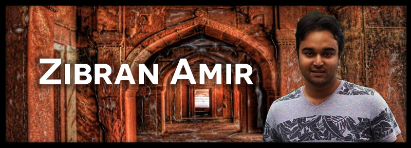

About Me
Hi, I am Zibran Amir. I was born in Dhaka, Bangladesh, and lived for most of my life, until in 2015, when I moved to New York.
I attended high school, there till I graduated in 2017. After a Gap Year, I finally joined the University of Rhode Island as student.
Now I major in Computer Science (which I changed from Computer Engineering) as well as minoring in History.
My hobbies are watching movies, reading and researching about history, and travelling around the world.
My dream career is to become a film maker and historian. I speak two languages: Bengali and English.
Some of my favourite movies are The Avengers, Avengers: Endgame, Logan, Gully Boy, The Social Network.
As for history, my favorite topic is the history of Indian Subcontinent, especially the Mughal Empire.